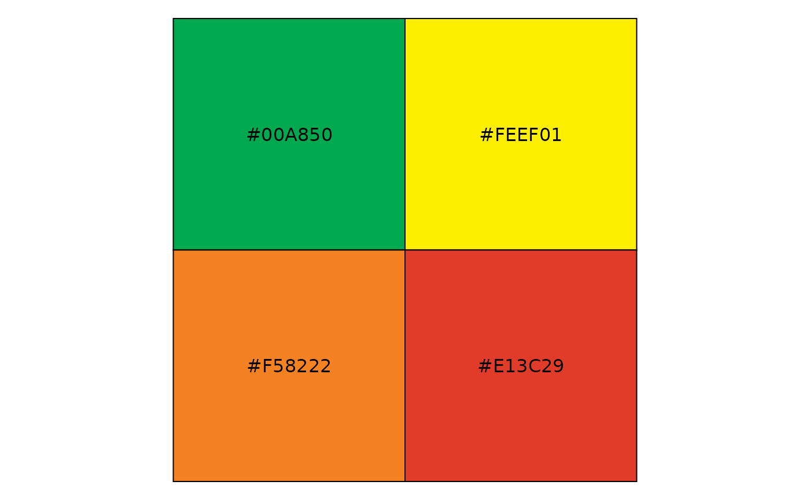
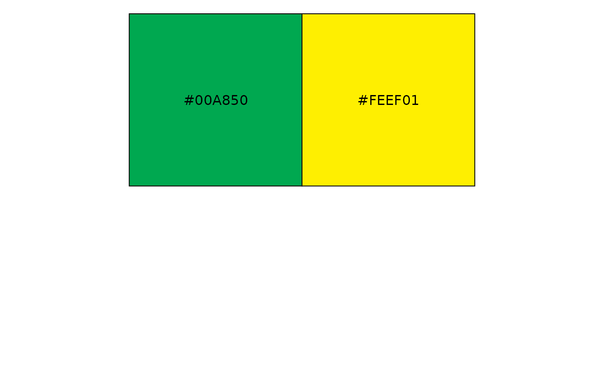
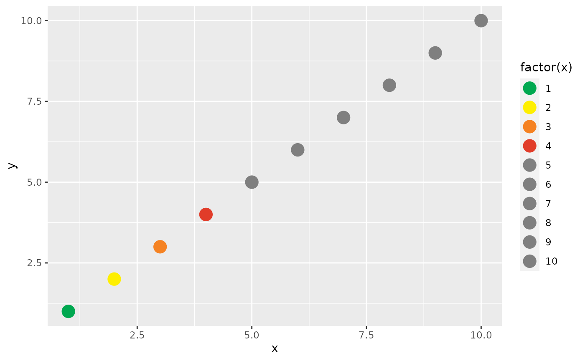
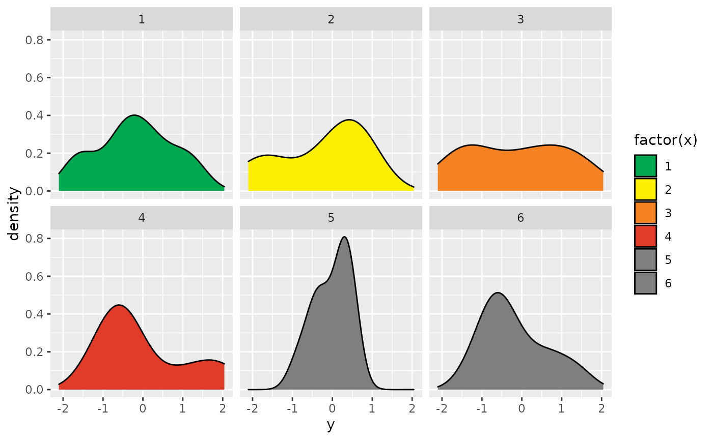
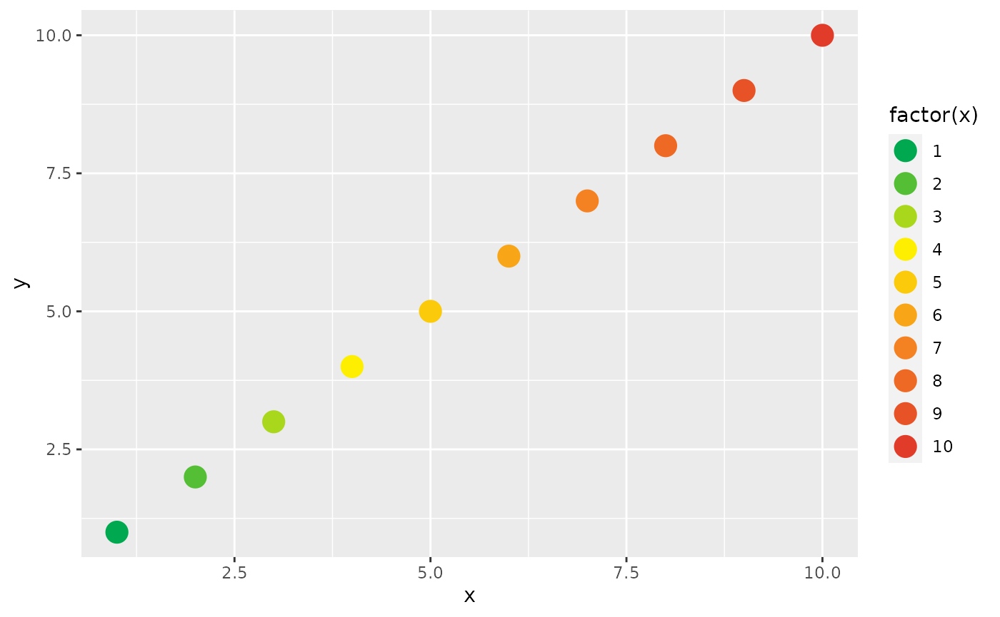
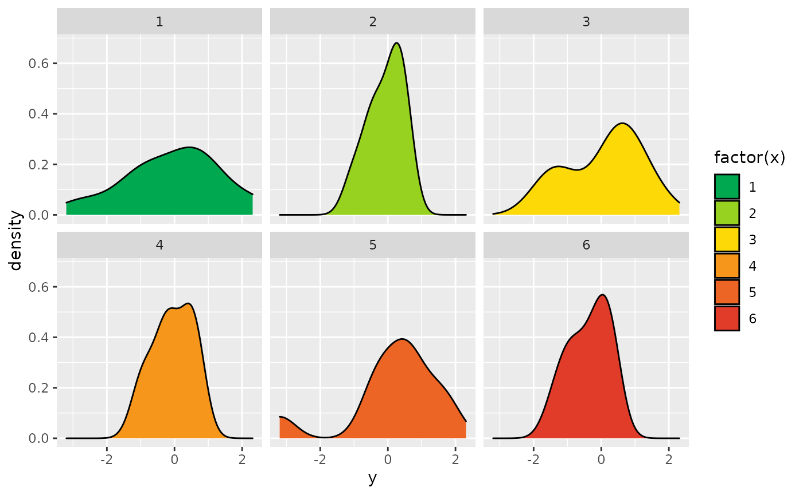
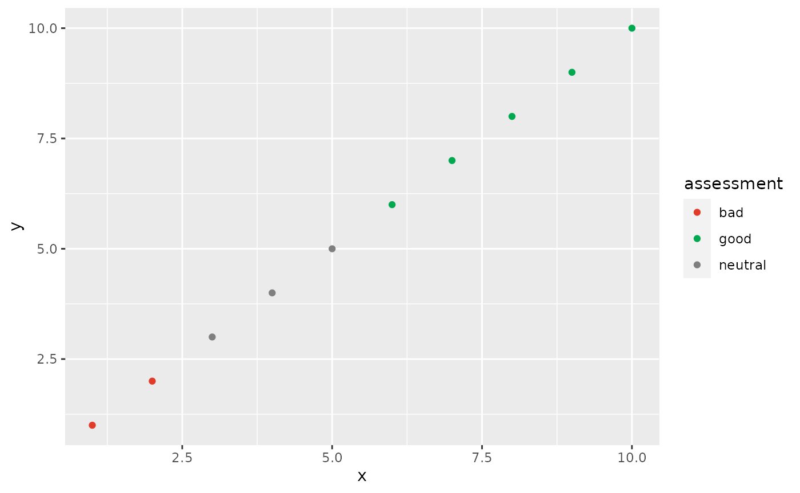
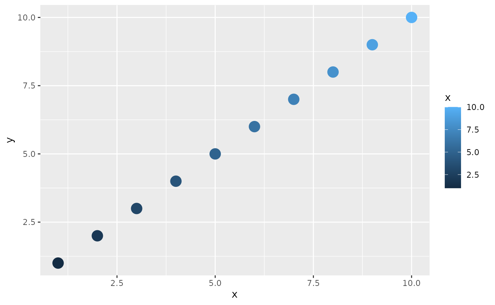
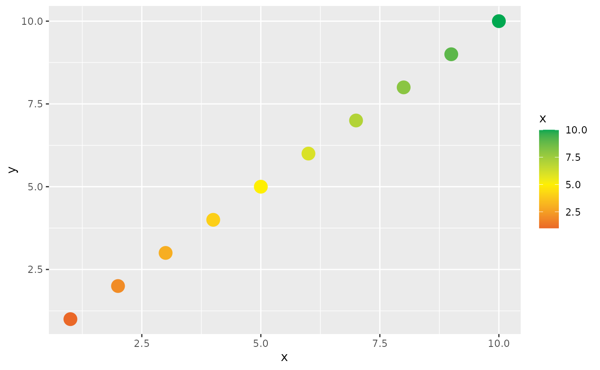
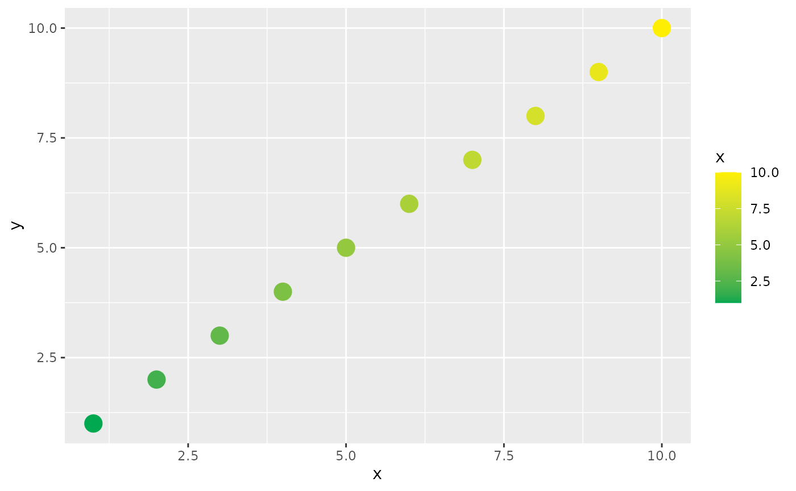

Vignette Title
Vignette Author
2020-10-13
Source:vignettes/unhcr-palette-test.Rmd
unhcr-palette-test.RmdSet Up
library(Rtistic) library(ggplot2) #> #> Attaching package: 'ggplot2' #> The following object is masked from 'package:Rtistic': #> #> theme_test
# make fake data for plots ---- points <- data.frame(x = 1:10, y = 1:10) distrb <- data.frame(x = rep(1:6, 10), y = rnorm(60, 0, 1)) # make plots for themes ---- g_points <- ggplot(points, aes(x, y, col = factor(x))) + geom_point(size = 5) g_distrb <- ggplot(distrb, aes(y, fill = factor(x))) + geom_density() + facet_wrap(. ~ x, ncol = 3) g_points_cont <- ggplot(points, aes(x, y, col = x)) + geom_point(size = 5)
Key Colors
The colors in the discrete palette are:
scales::show_col(test_pal)

The colors used to define the conintuous palette spectrum are:
scales::show_col(test_pal_cont)

The colors used in the diverging palette are:
scales::show_col(test_pal_div)

Discrete Palettes
Consider the following plots:
g_points
g_distrb
Fixed-length discrete palettes use the palette’s selected colors until they run out, then it uses grey for all additional levels of the aesthetic.
g_points + scale_color_discrete_rtistic(palette = "test") #> Warning: This manual palette can handle a maximum of 4 values. You have supplied #> 10.Set parameter extend = TRUE if you wish to interpolate a broader spectrum of #> colors.

g_distrb + scale_fill_discrete_rtistic(palette = "test") #> Warning: This manual palette can handle a maximum of 4 values. You have supplied #> 6.Set parameter extend = TRUE if you wish to interpolate a broader spectrum of #> colors.

Interpolated palettes extend the discrete palette by interpolating additional values.
g_points + scale_color_discrete_rtistic(palette = "test", extend = TRUE)

g_distrb + scale_fill_discrete_rtistic(palette = "test", extend = TRUE)

Opinionated palettes color specific values for “good”, “bad”, and “neutral” in your dataset.
points$assessment <- "neutral" points$assessment[points$x > 5] <- "good" points$assessment[points$x < 3] <- "bad" ggplot(points, aes(x, y, col = assessment)) + geom_point() + scale_color_opinionated_rtistic(palette = "test")

Continuous Palettes
Consider the following plots:
g_points_cont
Diverging palettes grow more extreme at the endpoints. You can specify the midpoint of where the center should be.
g_points_cont + scale_color_diverging_rtistic(palette = "test", midpoint = 5)

Normal continuous scales gradually move between two ends of a spectrum.
g_points_cont + scale_color_continuous_rtistic(palette = "test")
